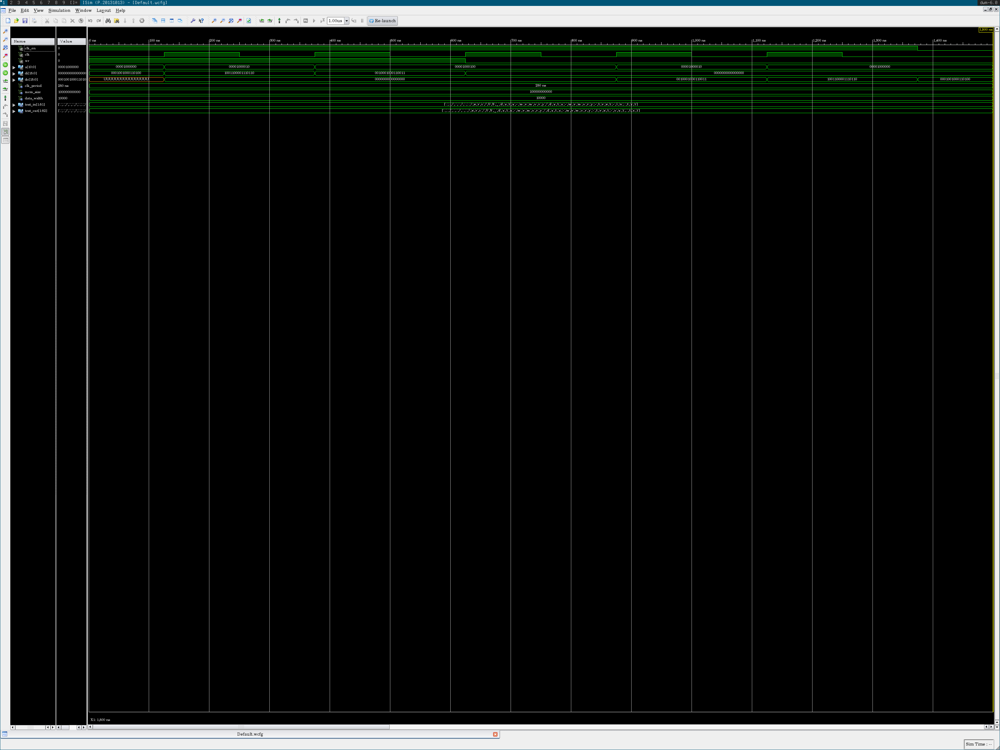
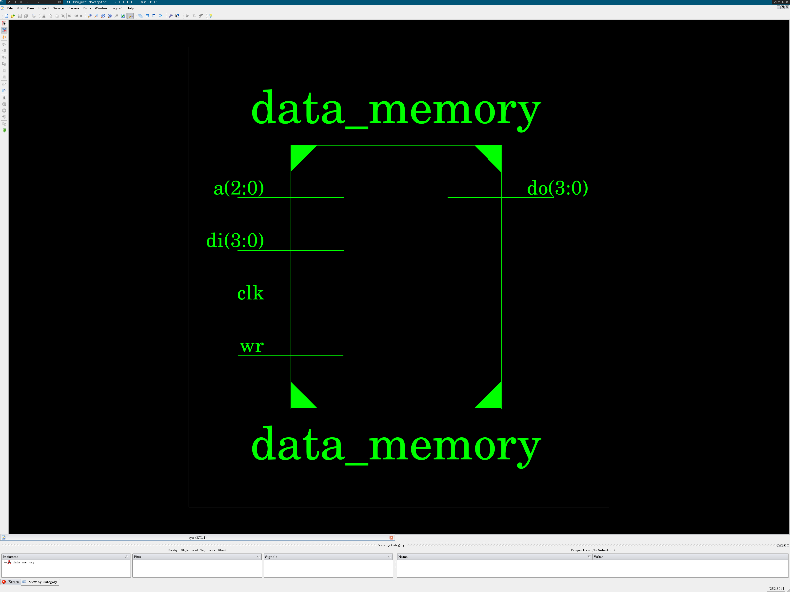
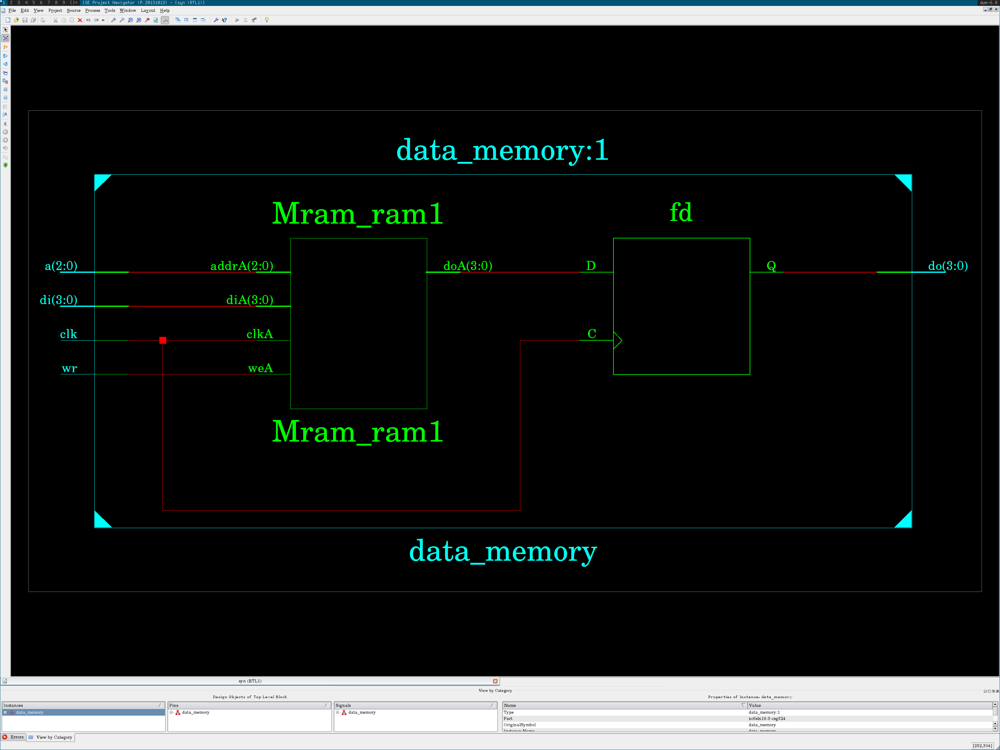

Arch data-memory-arch.vhdl
back to nav
library ieee;
use ieee.std_logic_1164.all;
library work;
use work.math.log;
use work.conv.int2str;
use work.conv.uint;
use work.conv.int;
entity data_memory is
generic (
debug: boolean := false;
mem_size: positive := 8;
data_width: positive := 4
);
port (
clk: in std_logic;
wr: in std_logic;
a: in std_logic_vector(log(mem_size, 2)-1 downto 0);
di: in std_logic_vector(data_width-1 downto 0);
do: out std_logic_vector(data_width-1 downto 0)
);
end entity data_memory;
architecture data_memory_arch of data_memory is
type mem is array (0 to mem_size-1) of
std_logic_vector(data_width-1 downto 0);
signal ram: mem := (others => (others => '0'));
begin
process (clk)
begin
if rising_edge(clk) then
if wr = '1' then
if debug then
report "write " &
"mem[" & natural'image(uint(a)) & "] = " &
int2str(int(di));
end if;
ram(uint(a)) <= di;
end if;
if debug then
report "read " &
"mem[" & natural'image(uint(a)) & "] = " &
int2str(int(ram(uint(a))));
end if;
do <= ram(uint(a));
end if;
end process;
end architecture data_memory_arch;
back to nav
Test data-memory-test.vhdl
back to nav
library std;
use std.textio.all;
library ieee;
use ieee.std_logic_1164.all;
use ieee.numeric_std.all;
library work;
use work.math.log;
use work.ctype.num_base;
use work.conv.str2int;
use work.conv.int2str;
use work.conv.ustdlv;
use work.conv.uint;
entity data_memory_test is
generic (
test_in: string := "data-memory-test-in.txt";
test_out: string := "data-memory-test-out.txt"
);
end data_memory_test;
architecture data_memory_test_arch of data_memory_test is
constant clk_period: time := 250 ns;
signal clk_en: std_logic := '1';
signal clk: std_logic;
constant mem_size: positive := 2048;
constant data_width: positive := 16;
signal wr: std_logic;
signal a: std_logic_vector(log(mem_size, 2)-1 downto 0);
signal di: std_logic_vector(data_width-1 downto 0);
signal do: std_logic_vector(data_width-1 downto 0);
alias slv is to_stdlogicvector [bit_vector return std_logic_vector];
alias bv is to_bitvector [std_logic_vector, bit return bit_vector];
begin
clk0: entity work.clock_pulse
generic map (period => clk_period)
port map (enable => clk_en, clock => clk);
data_memory0: entity work.data_memory
generic map (
debug => true,
mem_size => mem_size,
data_width => data_width
)
port map (
clk => clk,
wr => wr,
a => a,
di => di,
do => do
);
process
file f0: text open read_mode is test_in;
file f1: text open write_mode is test_out;
variable l0, l1: line;
variable ln: positive := 1;
variable i: positive;
variable n: integer;
variable parsed: boolean;
begin
if endfile(f0) then
clk_en <= '0';
wait;
end if;
parsed := false;
readline(f0, l0);
if l0'length /= 0 and l0(l0'low) /= '#' then
i := 1;
-- a
str2int(l0.all(i to l0.all'right), i, n);
a <= ustdlv(n, a'length);
-- di
str2int(l0.all(i to l0.all'right), i, n);
di <= ustdlv(n, di'length);
-- write/~read
str2int(l0.all(i to l0.all'right), i, n);
wr <= ustdlv(n, 1)(0);
parsed := true;
wait until rising_edge(clk);
else
writeline(f1, l0);
end if;
if parsed then
write(l1, int2str( uint(a), hex), right, 10);
write(l1, int2str(uint(di), hex), right, 9);
write(l1, int2str(uint(wr), dec), right, 8);
write(l1, int2str(uint(do), hex), right, 16);
writeline(f1, l1);
end if;
ln := ln + 1;
end process;
end data_memory_test_arch;
back to nav
Test input data-memory-test-in.txt
back to nav
# format:
# addr data_in write/~read | data_out
# hex hex bit | hex
0x40 0x1234 1
0x42 0x9876 1
0x44 0x2233 1
0x44 0x0000 0
0x42 0x0000 0
0x40 0x0000 0
back to nav
Test output data-memory-test-out.txt
back to nav
# format:
# addr data_in write/~read | data_out
# hex hex bit | hex
0x40 0x1234 1 0x0
0x42 0x9876 1 0x0
0x44 0x2233 1 0x0
0x44 0x0 0 0x0
0x42 0x0 0 0x2233
0x40 0x0 0 0x9876
back to nav
Test waveform data-memory-test.png
back to nav

back to nav
Schematic pinout data-memory-nexys3-pinout.png
back to nav

back to nav
Schematic full data-memory-nexys3-schema.png
back to nav

back to nav
Pin placement (UCF) data-memory-nexys3.ucf
back to nav
net "clk" loc = "V10";
net "wr" loc="T5";
net "a[2]" loc="V8";
net "a[1]" loc="U8";
net "a[0]" loc="N8";
net "di[3]" loc="M8";
net "di[2]" loc="V9";
net "di[1]" loc="T9";
net "di[0]" loc="T10";
net "do[3]" loc="T11";
net "do[2]" loc="R11";
net "do[1]" loc="N11";
net "do[0]" loc="M11";
back to nav
Source code of util-arch.vhdl
back to nav
--------------------------
-- Clock for testbenchs --
--------------------------
library ieee;
use ieee.std_logic_1164.all;
entity clock_pulse is
generic (period: time);
port (enable: in std_logic; clock: out std_logic);
end clock_pulse;
architecture clock_pulse_arch of clock_pulse is
signal clk: std_logic := '0';
begin
clk <=
not clk after period/2 when enable = '1' else
'0' when enable = '0';
clock <= clk;
end clock_pulse_arch;
--------------------------
-- A 2to1 mux ------------
--------------------------
library ieee;
use ieee.std_logic_1164.all;
entity mux2to1 is
generic (size: positive);
port (
a: in std_logic_vector(size-1 downto 0);
b: in std_logic_vector(size-1 downto 0);
s: in std_logic;
z: out std_logic_vector(size-1 downto 0)
);
end mux2to1;
architecture mux2to1_arch of mux2to1 is
begin
process (s, a, b)
begin
case s is
when '0' => z <= a;
when others => z <= b;
end case;
end process;
end mux2to1_arch;
--------------------------
-- A clock divisor -------
--------------------------
library ieee;
use ieee.std_logic_1164.all;
use ieee.numeric_std.all;
library work;
entity clock_divisor is
generic(size: natural);
port(
clk: in std_logic;
q: out std_logic_vector(size-1 downto 0)
);
end clock_divisor;
architecture clock_divisor_arch of clock_divisor is
begin
process(clk)
variable t: std_logic_vector(size-1 downto 0);
begin
if (rising_edge(clk)) then
t := std_logic_vector(
unsigned(t) + to_unsigned(1, t'length)
);
q <= t;
end if;
end process;
end clock_divisor_arch;
---------------------
-- Types ------------
---------------------
library ieee;
use ieee.std_logic_1164.all;
package types is
type slv25_arr_t is
array (natural range<>) of std_logic_vector(24 downto 0);
end;
---------------------
-- Math functions ---
---------------------
package math is
function log(x: positive; base: positive) return natural;
end;
package body math is
function log(x: positive; base: positive) return natural is
begin
if (base = 1) then
report "log base 1 is not appropriate" severity error;
elsif (x = 0) then
report "log arg 0 is not appropriate" severity error;
end if;
if x < base then
return 0;
else
return 1 + log(x/base, base);
end if;
end log;
end package body;
---------------------
-- Character types --
---------------------
package ctype is
type num_base is (bin, oct, dec, hex);
function max(f: num_base) return natural;
function isspace(x: character) return boolean;
function isstdl(x: character) return boolean;
function isdigit(x: character; f: num_base := dec) return boolean;
end;
package body ctype is
function max(f: num_base) return natural is
begin
case f is
when bin => return 2;
when oct => return 8;
when dec => return 10;
when hex => return 16;
end case;
end max;
function isspace(x: character) return boolean is
begin
case x is
when ' '|HT|LF|VT|FF|CR => return true;
when others => return false;
end case;
end isspace;
function isstdl(x: character) return boolean is
begin
case x is
when '0'|'1' => return true;
when 'l'|'h'|'u'|'z'|'w'|'x'|'-' => return true;
when 'L'|'H'|'U'|'Z'|'W'|'X'|'-' => return true;
when others => return false;
end case;
end isstdl;
function isdigit(x: character; f: num_base := dec) return boolean is
begin
case f is
when bin =>
case x is
when '0'|'1' => return true;
when others => return false;
end case;
when oct =>
case x is
when '0'|'1'|'2'|'3'|'4'|'5'|'6'|'7' => return true;
when others => return false;
end case;
when dec =>
case x is
when '0'|'1'|'2'|'3'|'4'|'5'|'6'|'7' => return true;
when '8'|'9' => return true;
when others => return false;
end case;
when hex =>
case x is
when '0'|'1'|'2'|'3'|'4'|'5'|'6'|'7' => return true;
when '8'|'9' => return true;
when 'a'|'b'|'c'|'d'|'e'|'f' => return true;
when 'A'|'B'|'C'|'D'|'E'|'F' => return true;
when others => return false;
end case;
end case;
end isdigit;
end package body;
--
-- Conversion library
--
library ieee;
use ieee.std_logic_1164.all;
use ieee.numeric_std.all;
use work.ctype.all;
package conv is
function int(x: std_logic_vector) return integer;
function int(x: std_logic) return integer;
function uint(x: std_logic_vector) return natural;
function uint(x: std_logic) return natural;
function stdlv(x: integer; l: positive) return std_logic_vector;
function ustdlv(x: natural; l: positive) return std_logic_vector;
function chr2num(x: character; f: num_base := dec; xmap: bit := '0')
return integer;
function num2chr(x: integer; f: num_base := dec)
return character;
function int2str(x: integer; f: num_base := dec) return string;
function stdl2chr(x: std_logic) return character;
function stdlv2str(x: std_logic_vector) return string;
procedure str2int( -- number can be bin, oct, dec or hex
nstr: in string; -- string to be converted
endstr: out positive; -- store index of first non-valid char
num: out integer; -- store converted number
xmap: in bit := '0' -- what to do with U, X, Z, etc
);
end;
package body conv is
function int(x: std_logic_vector) return integer is
begin
return to_integer(signed(x));
end int;
function int(x: std_logic) return integer is
begin
return uint("0" & x); -- a bit is unsigned anyway
end int;
function uint(x: std_logic_vector) return natural is
begin
return to_integer(unsigned(x));
end uint;
function uint(x: std_logic) return natural is
begin
return uint("0" & x); -- a bit is unsigned anyway
end uint;
function stdlv(x: integer; l: positive) return std_logic_vector is
begin
return std_logic_vector(to_signed(x, l));
end stdlv;
function ustdlv(x: natural; l: positive) return std_logic_vector is
begin
return std_logic_vector(to_unsigned(x, l));
end ustdlv;
function chr2num(x: character; f: num_base := dec; xmap: bit := '0')
return integer is
begin
if isdigit(x, f) then
case x is
when '0' => return 0;
when '1' => return 1;
when '2' => return 2;
when '3' => return 3;
when '4' => return 4;
when '5' => return 5;
when '6' => return 6;
when '7' => return 7;
when '8' => return 8;
when '9' => return 9;
when 'a'|'A' => return 10;
when 'b'|'B' => return 11;
when 'c'|'C' => return 12;
when 'd'|'D' => return 13;
when 'e'|'E' => return 14;
when 'f'|'F' => return 15;
end case;
elsif f /= dec then -- L, H, W, etc don't make sense in decimal
case x is
when 'l'|'L' => return 0;
when 'h'|'H' => return max(f) - 1;
when
'u'|'z'|'w'|'x'|'-'|
'U'|'Z'|'W'|'X'|'-' =>
case xmap is
when '0' => return 0;
when '1' => return max(f) - 1;
end case;
when others => return -1;
end case;
end if;
return -1;
end chr2num;
function num2chr(x: integer; f: num_base := dec) return character is
variable c: character;
begin
case x is
when 0 => c := '0';
when 1 => c := '1';
when 2 =>
if f = bin then c := '?';
else c := '2'; end if;
when 3 =>
if f = bin then c := '?';
else c := '3'; end if;
when 4 =>
if f = bin then c := '?';
else c := '4'; end if;
when 5 =>
if f = bin then c := '?';
else c := '5'; end if;
when 6 =>
if f = bin then c := '?';
else c := '6'; end if;
when 7 =>
if f = bin then c := '?';
else c := '7'; end if;
when 8 =>
if f = bin or f = oct then c := '?';
else c := '8'; end if;
when 9 =>
if f = bin or f = oct then c := '?';
else c := '9'; end if;
when 10 =>
if f = bin or f = oct or f = dec then c := '?';
else c := 'a'; end if;
when 11 =>
if f = bin or f = oct or f = dec then c := '?';
else c := 'b'; end if;
when 12 =>
if f = bin or f = oct or f = dec then c := '?';
else c := 'c'; end if;
when 13 =>
if f = bin or f = oct or f = dec then c := '?';
else c := 'd'; end if;
when 14 =>
if f = bin or f = oct or f = dec then c := '?';
else c := 'e'; end if;
when 15 =>
if f = bin or f = oct or f = dec then c := '?';
else c := 'f'; end if;
when others =>
c := '?';
end case;
return c;
end num2chr;
function int2str(x: integer; f: num_base := dec) return string is
-- recursion to the rescue!!!
function c(x: integer) return string is
begin
if x < max(f) then
return "" & num2chr(x);
else
return c(x/max(f)) & num2chr(x mod max(f), f);
end if;
end c;
variable a: integer;
begin
if x < 0 then
a := -x;
case f is
when bin => return "-0b" & c(a);
when oct => return "-0" & c(a);
when dec => return "-" & c(a);
when hex => return "-0x" & c(a);
end case;
else
a := x;
case f is
when bin => return "0b" & c(a);
when oct => return "0" & c(a);
when dec => return "" & c(a);
when hex => return "0x" & c(a);
end case;
end if;
end int2str;
function stdl2chr(x: std_logic) return character is
variable c: character;
begin
case x is
when '0' => c := '0';
when '1' => c := '1';
when 'L' => c := 'L';
when 'H' => c := 'H';
when 'U' => c := 'U';
when 'Z' => c := 'Z';
when 'W' => c := 'W';
when 'X' => c := 'X';
when '-' => c := '-';
end case;
return c;
end stdl2chr;
function stdlv2str(x: std_logic_vector) return string is
variable s: string(1 to x'length);
begin
for i in x'left downto x'right loop
s(x'left - i + 1) := stdl2chr(x(i));
end loop;
return s;
end stdlv2str;
procedure str2int(
nstr: in string;
endstr: out positive;
num: out integer;
xmap: in bit := '0') is
variable i: positive := nstr'left;
variable v: integer := 0;
variable t: num_base;
variable b: positive;
variable s: boolean := false;
begin
endstr := i;
num := 0;
while i <= nstr'right and isspace(nstr(i)) loop
i := i + 1;
end loop;
if nstr'right < i then
report "str2int: empty" severity warning;
return;
end if;
-- number must start here
if nstr(i) = '-' then
i := i + 1;
if nstr'right < i then
report "str2int: empty after '-'"
severity warning;
return;
end if;
s := true;
end if;
if nstr(i) = '0' then
i := i + 1;
if nstr'right < i then
endstr := i;
num := 0;
return;
end if;
case nstr(i) is
when 'x'|'X' => t := hex; b := 16;
when 'b'|'B' => t := bin; b := 2;
when others => -- oct has only the '0' prefix
if chr2num(nstr(i), oct, xmap) = -1 then
endstr := i;
num := 0;
return;
end if;
i := i - 1;
t := oct; b := 8;
end case;
i := i + 1;
elsif chr2num(nstr(i), dec, xmap) = -1 then
report "str2int invalid dec char " &
"'" & nstr(i) & "'" severity warning;
return;
else
t := dec; b := 10;
end if;
if nstr'right < i then
report "str2int empty after prefix" severity warning;
return;
end if;
-- start conversion
while
i <= nstr'right and
chr2num(nstr(i), t, xmap) /= -1 loop
v := b*v + chr2num(nstr(i), t, xmap);
i := i + 1;
end loop;
endstr := i;
if s then num := -v; else num := v; end if;
end procedure str2int;
end package body;
back to nav
Compilation fuse.log
back to nav
Running: /opt/Xilinx/14.7/ISE_DS/ISE/bin/lin64/unwrapped/fuse -incremental -timeprecision_vhdl 1ns -generic_top test_in=../../../src/05_data-memory/data-memory-test-in.txt -generic_top test_out=../../../src/05_data-memory/data-memory-test-out.txt -prj sim.prj work.data_memory_test -o sim.exe
ISim P.20131013 (signature 0xfbc00daa)
Number of CPUs detected in this system: 2
Turning on mult-threading, number of parallel sub-compilation jobs: 4
Determining compilation order of HDL files
Parsing VHDL file "../../../src/00_util/util-arch.vhdl" into library work
Parsing VHDL file "../../../src/05_data-memory/data-memory-arch.vhdl" into library work
Parsing VHDL file "../../../src/05_data-memory/data-memory-test.vhdl" into library work
Starting static elaboration
Completed static elaboration
Fuse Memory Usage: 96704 KB
Fuse CPU Usage: 3740 ms
Compiling package standard
Compiling package textio
Compiling package std_logic_1164
Compiling package numeric_std
Compiling package math
Compiling package ctype
Compiling package conv
Compiling architecture clock_pulse_arch of entity clock_pulse [\clock_pulse(250)\]
Compiling architecture data_memory_arch of entity data_memory [\data_memory(true,2048,16)\]
Compiling architecture data_memory_test_arch of entity data_memory_test
Time Resolution for simulation is 1ns.
Waiting for 5 sub-compilation(s) to finish...
Compiled 12 VHDL Units
Built simulation executable sim.exe
Fuse Memory Usage: 414748 KB
Fuse CPU Usage: 4660 ms
GCC CPU Usage: 16680 ms
back to nav
Running isim.log
back to nav
ISim log file
Running: ./sim.exe -tclbatch sim.tcl -wdb sim.wdb
ISim P.20131013 (signature 0xfbc00daa)
This is a Full version of ISim.
Time resolution is 1 ns
# onerror resume
# wave add -radix hex /
# wave add -radix dec /
# run all
Simulator is doing circuit initialization process.
Finished circuit initialization process.
at 125 ns(1), Instance /data_memory_test/ : Warning: NUMERIC_STD.TO_INTEGER: metavalue detected, returning 0
at 125 ns(1): Note: write mem[64] = 4660 (/data_memory_test/data_memory0/).
at 125 ns(1): Note: read mem[64] = 0 (/data_memory_test/data_memory0/).
at 375 ns(1): Note: write mem[66] = -26506 (/data_memory_test/data_memory0/).
at 375 ns(1): Note: read mem[66] = 0 (/data_memory_test/data_memory0/).
at 625 ns(1): Note: write mem[68] = 8755 (/data_memory_test/data_memory0/).
at 625 ns(1): Note: read mem[68] = 0 (/data_memory_test/data_memory0/).
at 875 ns(1): Note: read mem[68] = 8755 (/data_memory_test/data_memory0/).
at 1125 ns(1): Note: read mem[66] = -26506 (/data_memory_test/data_memory0/).
at 1375 ns(1): Note: read mem[64] = 4660 (/data_memory_test/data_memory0/).
# quit
back to nav
XST syn.srp
back to nav
Release 14.7 - xst P.20131013 (lin64)
Copyright (c) 1995-2013 Xilinx, Inc. All rights reserved.
-->
-->
TABLE OF CONTENTS
1) Synthesis Options Summary
2) HDL Parsing
3) HDL Elaboration
4) HDL Synthesis
4.1) HDL Synthesis Report
5) Advanced HDL Synthesis
5.1) Advanced HDL Synthesis Report
6) Low Level Synthesis
7) Partition Report
8) Design Summary
8.1) Primitive and Black Box Usage
8.2) Device utilization summary
8.3) Partition Resource Summary
8.4) Timing Report
8.4.1) Clock Information
8.4.2) Asynchronous Control Signals Information
8.4.3) Timing Summary
8.4.4) Timing Details
8.4.5) Cross Clock Domains Report
=========================================================================
* Synthesis Options Summary *
=========================================================================
---- Source Parameters
Input File Name : "syn.prj"
Input Format : mixed
---- Target Parameters
Output File Name : "syn.ngc"
Output Format : ngc
Target Device : xc6slx16-3-csg324
---- Source Options
Top Module Name : data_memory
FSM Style : LUT
---- General Options
RTL Output : Yes
Optimization Goal : Speed
Optimization Effort : 1
Bus Delimiter : []
=========================================================================
=========================================================================
* HDL Parsing *
=========================================================================
Parsing src/00_util/util-arch.vhdl file "/home/urbo/code/examples/vhdl/escomips/src/00_util/util-arch.vhdl" into library work
Parsing entity clock_pulse.
Parsing architecture clock_pulse_arch of entity clock_pulse.
Parsing entity mux2to1.
Parsing architecture mux2to1_arch of entity mux2to1.
Parsing entity clock_divisor.
Parsing architecture clock_divisor_arch of entity clock_divisor.
Parsing package types.
Parsing package math.
Parsing package body math.
Parsing package ctype.
Parsing package body ctype.
Parsing package conv.
Parsing package body conv.
Parsing src/00_util/util-arch.vhdl file "/home/urbo/code/examples/vhdl/escomips/src/05_data-memory/data-memory-arch.vhdl" into library work
Parsing entity data_memory.
Parsing architecture data_memory_arch of entity data_memory.
=========================================================================
* HDL Elaboration *
=========================================================================
Elaborating entity data_memory (architecture data_memory_arch) with generics from library work.
=========================================================================
* HDL Synthesis *
=========================================================================
Synthesizing Unit data_memory.
Related source file is "/home/urbo/code/examples/vhdl/escomips/src/05_data-memory/data-memory-arch.vhdl".
debug = false
mem_size = 8
data_width = 4
Found 8x4-bit single-port RAM Mram_ram for signal ram.
Found 4-bit register for signal do.
Summary:
inferred 1 RAM(s).
inferred 4 D-type flip-flop(s).
Unit data_memory synthesized.
=========================================================================
HDL Synthesis Report
Macro Statistics
# RAMs : 1
8x4-bit single-port RAM : 1
# Registers : 1
4-bit register : 1
=========================================================================
=========================================================================
* Advanced HDL Synthesis *
=========================================================================
Synthesizing (advanced) Unit data_memory.
INFO:Xst:3231 - The small RAM Mram_ram will be implemented on LUTs in order to maximize performance and save block RAM resources. If you want to force its implementation on block, use option/constraint ram_style.
-----------------------------------------------------------------------
| ram_type | Distributed | |
-----------------------------------------------------------------------
| Port A |
| aspect ratio | 8-word x 4-bit | |
| clkA | connected to signal clk | rise |
| weA | connected to signal wr | high |
| addrA | connected to signal (a[2],a[1],a[0]) | |
| diA | connected to signal (di[3],di[2],di[1],di[0]) | |
| doA | connected to internal node | |
-----------------------------------------------------------------------
Unit data_memory synthesized (advanced).
=========================================================================
Advanced HDL Synthesis Report
Macro Statistics
# RAMs : 1
8x4-bit single-port distributed RAM : 1
# Registers : 4
Flip-Flops : 4
=========================================================================
=========================================================================
* Low Level Synthesis *
=========================================================================
Optimizing unit data_memory ...
Mapping all equations...
Building and optimizing final netlist ...
Found area constraint ratio of 100 (+ 0) on block data_memory, actual ratio is 0.
Final Macro Processing ...
=========================================================================
Final Register Report
Macro Statistics
# Registers : 4
Flip-Flops : 4
=========================================================================
=========================================================================
* Partition Report *
=========================================================================
Partition Implementation Status
-------------------------------
No Partitions were found in this design.
-------------------------------
=========================================================================
* Design Summary *
=========================================================================
Top Level Output File Name : syn.ngc
Primitive and Black Box Usage:
------------------------------
# BELS : 1
# GND : 1
# FlipFlops/Latches : 4
# FD : 4
# RAMS : 4
# RAM16X1S : 4
# Clock Buffers : 1
# BUFGP : 1
# IO Buffers : 12
# IBUF : 8
# OBUF : 4
Device utilization summary:
---------------------------
Selected Device : 6slx16csg324-3
Slice Logic Utilization:
Number of Slice Registers: 4 out of 18224 0%
Number of Slice LUTs: 4 out of 9112 0%
Number used as Memory: 4 out of 2176 0%
Number used as RAM: 4
Slice Logic Distribution:
Number of LUT Flip Flop pairs used: 8
Number with an unused Flip Flop: 4 out of 8 50%
Number with an unused LUT: 4 out of 8 50%
Number of fully used LUT-FF pairs: 0 out of 8 0%
Number of unique control sets: 1
IO Utilization:
Number of IOs: 13
Number of bonded IOBs: 13 out of 232 5%
Specific Feature Utilization:
Number of BUFG/BUFGCTRLs: 1 out of 16 6%
---------------------------
Partition Resource Summary:
---------------------------
No Partitions were found in this design.
---------------------------
=========================================================================
Timing Report
NOTE: THESE TIMING NUMBERS ARE ONLY A SYNTHESIS ESTIMATE.
FOR ACCURATE TIMING INFORMATION PLEASE REFER TO THE TRACE REPORT
GENERATED AFTER PLACE-and-ROUTE.
Clock Information:
------------------
-----------------------------------+------------------------+-------+
Clock Signal | Clock buffer(FF name) | Load |
-----------------------------------+------------------------+-------+
clk | BUFGP | 8 |
-----------------------------------+------------------------+-------+
Asynchronous Control Signals Information:
----------------------------------------
No asynchronous control signals found in this design
Timing Summary:
---------------
Speed Grade: -3
Minimum period: 1.671ns (Maximum Frequency: 598.498MHz)
Minimum input arrival time before clock: 2.909ns
Maximum output required time after clock: 3.597ns
Maximum combinational path delay: No path found
Timing Details:
---------------
All values displayed in nanoseconds (ns)
=========================================================================
Timing constraint: Default period analysis for Clock 'clk'
Clock period: 1.671ns (frequency: 598.498MHz)
Total number of paths / destination ports: 4 / 4
-------------------------------------------------------------------------
Delay: 1.671ns (Levels of Logic = 0)
Source: Mram_ram1 (RAM)
Destination: do_0 (FF)
Source Clock: clk rising
Destination Clock: clk rising
Data Path: Mram_ram1 to do_0
Gate Net
Cell:in->out fanout Delay Delay Logical Name (Net Name)
---------------------------------------- ------------
RAM16X1S:WCLK->O 1 0.990 0.579 Mram_ram1 (_n0008[0])
FD:D 0.102 do_0
----------------------------------------
Total 1.671ns (1.092ns logic, 0.579ns route)
(65.4% logic, 34.6% route)
=========================================================================
Timing constraint: Default OFFSET IN BEFORE for Clock 'clk'
Total number of paths / destination ports: 32 / 24
-------------------------------------------------------------------------
Offset: 2.909ns (Levels of Logic = 2)
Source: a[0] (PAD)
Destination: do_0 (FF)
Destination Clock: clk rising
Data Path: a[0] to do_0
Gate Net
Cell:in->out fanout Delay Delay Logical Name (Net Name)
---------------------------------------- ------------
IBUF:I->O 8 1.222 0.802 a_0_IBUF (a_0_IBUF)
RAM16X1S:A0->O 1 0.205 0.579 Mram_ram1 (_n0008[0])
FD:D 0.102 do_0
----------------------------------------
Total 2.909ns (1.529ns logic, 1.380ns route)
(52.6% logic, 47.4% route)
=========================================================================
Timing constraint: Default OFFSET OUT AFTER for Clock 'clk'
Total number of paths / destination ports: 4 / 4
-------------------------------------------------------------------------
Offset: 3.597ns (Levels of Logic = 1)
Source: do_3 (FF)
Destination: do[3] (PAD)
Source Clock: clk rising
Data Path: do_3 to do[3]
Gate Net
Cell:in->out fanout Delay Delay Logical Name (Net Name)
---------------------------------------- ------------
FD:C->Q 1 0.447 0.579 do_3 (do_3)
OBUF:I->O 2.571 do_3_OBUF (do[3])
----------------------------------------
Total 3.597ns (3.018ns logic, 0.579ns route)
(83.9% logic, 16.1% route)
=========================================================================
Cross Clock Domains Report:
--------------------------
Clock to Setup on destination clock clk
---------------+---------+---------+---------+---------+
| Src:Rise| Src:Fall| Src:Rise| Src:Fall|
Source Clock |Dest:Rise|Dest:Rise|Dest:Fall|Dest:Fall|
---------------+---------+---------+---------+---------+
clk | 1.671| | | |
---------------+---------+---------+---------+---------+
=========================================================================
Total REAL time to Xst completion: 75.00 secs
Total CPU time to Xst completion: 45.34 secs
-->
Total memory usage is 383976 kilobytes
Number of errors : 0 ( 0 filtered)
Number of warnings : 0 ( 0 filtered)
Number of infos : 1 ( 0 filtered)
back to nav
NGD syn.bld
back to nav
Release 14.7 ngdbuild P.20131013 (lin64)
Copyright (c) 1995-2013 Xilinx, Inc. All rights reserved.
Command Line: /opt/Xilinx/14.7/ISE_DS/ISE/bin/lin64/unwrapped/ngdbuild -p
xc6slx16-3-csg324 -uc syn.ucf syn.ngc
Reading NGO file
"/home/urbo/code/examples/vhdl/escomips/src/05_data-memory/_xilinx-data-memory.d
/nexys3/syn.ngc" ...
Gathering constraint information from source properties...
Done.
Annotating constraints to design from ucf file "syn.ucf" ...
Resolving constraint associations...
Checking Constraint Associations...
Done...
Checking expanded design ...
Partition Implementation Status
-------------------------------
No Partitions were found in this design.
-------------------------------
NGDBUILD Design Results Summary:
Number of errors: 0
Number of warnings: 0
Total memory usage is 398124 kilobytes
Writing NGD file "syn.ngd" ...
Total REAL time to NGDBUILD completion: 19 sec
Total CPU time to NGDBUILD completion: 19 sec
Writing NGDBUILD log file "syn.bld"...
back to nav
MAP syn.map
back to nav
Release 14.7 Map P.20131013 (lin64)
Xilinx Map Application Log File for Design 'data_memory'
Design Information
------------------
Command Line : map -w -detail -pr b syn.ngd
Target Device : xc6slx16
Target Package : csg324
Target Speed : -3
Mapper Version : spartan6 -- $Revision: 1.55 $
Mapped Date : Thu Jul 16 06:39:08 2015
Mapping design into LUTs...
Writing file syn.ngm...
Running directed packing...
Running delay-based LUT packing...
Updating timing models...
INFO:Map:215 - The Interim Design Summary has been generated in the MAP Report
(.mrp).
Running timing-driven placement...
Total REAL time at the beginning of Placer: 23 secs
Total CPU time at the beginning of Placer: 23 secs
Phase 1.1 Initial Placement Analysis
Phase 1.1 Initial Placement Analysis (Checksum:c19a0282) REAL time: 26 secs
Phase 2.7 Design Feasibility Check
Phase 2.7 Design Feasibility Check (Checksum:c19a0282) REAL time: 26 secs
Phase 3.31 Local Placement Optimization
Phase 3.31 Local Placement Optimization (Checksum:c19a0282) REAL time: 26 secs
Phase 4.2 Initial Placement for Architecture Specific Features
Phase 4.2 Initial Placement for Architecture Specific Features
(Checksum:220af655) REAL time: 27 secs
Phase 5.36 Local Placement Optimization
Phase 5.36 Local Placement Optimization (Checksum:220af655) REAL time: 27 secs
Phase 6.30 Global Clock Region Assignment
Phase 6.30 Global Clock Region Assignment (Checksum:220af655) REAL time: 27 secs
Phase 7.3 Local Placement Optimization
Phase 7.3 Local Placement Optimization (Checksum:220af655) REAL time: 27 secs
Phase 8.5 Local Placement Optimization
Phase 8.5 Local Placement Optimization (Checksum:220af655) REAL time: 27 secs
Phase 9.8 Global Placement
.......
.......
Phase 9.8 Global Placement (Checksum:f6d515bd) REAL time: 28 secs
Phase 10.5 Local Placement Optimization
Phase 10.5 Local Placement Optimization (Checksum:f6d515bd) REAL time: 28 secs
Phase 11.18 Placement Optimization
Phase 11.18 Placement Optimization (Checksum:f6d515bd) REAL time: 28 secs
Phase 12.5 Local Placement Optimization
Phase 12.5 Local Placement Optimization (Checksum:f6d515bd) REAL time: 28 secs
Phase 13.34 Placement Validation
Phase 13.34 Placement Validation (Checksum:f6d515bd) REAL time: 28 secs
Total REAL time to Placer completion: 28 secs
Total CPU time to Placer completion: 28 secs
Running post-placement packing...
Writing output files...
Design Summary
--------------
Design Summary:
Number of errors: 0
Number of warnings: 0
Slice Logic Utilization:
Number of Slice Registers: 0 out of 18,224 0%
Number of Slice LUTs: 4 out of 9,112 1%
Number used as logic: 0 out of 9,112 0%
Number used as Memory: 4 out of 2,176 1%
Number used as Dual Port RAM: 0
Number used as Single Port RAM: 4
Number using O6 output only: 4
Number using O5 output only: 0
Number using O5 and O6: 0
Number used as Shift Register: 0
Slice Logic Distribution:
Number of occupied Slices: 1 out of 2,278 1%
Number of MUXCYs used: 0 out of 4,556 0%
Number of LUT Flip Flop pairs used: 4
Number with an unused Flip Flop: 4 out of 4 100%
Number with an unused LUT: 0 out of 4 0%
Number of fully used LUT-FF pairs: 0 out of 4 0%
Number of unique control sets: 1
Number of slice register sites lost
to control set restrictions: 4 out of 18,224 1%
A LUT Flip Flop pair for this architecture represents one LUT paired with
one Flip Flop within a slice. A control set is a unique combination of
clock, reset, set, and enable signals for a registered element.
The Slice Logic Distribution report is not meaningful if the design is
over-mapped for a non-slice resource or if Placement fails.
IO Utilization:
Number of bonded IOBs: 13 out of 232 5%
Number of LOCed IOBs: 13 out of 13 100%
IOB Flip Flops: 4
Specific Feature Utilization:
Number of RAMB16BWERs: 0 out of 32 0%
Number of RAMB8BWERs: 0 out of 64 0%
Number of BUFIO2/BUFIO2_2CLKs: 0 out of 32 0%
Number of BUFIO2FB/BUFIO2FB_2CLKs: 0 out of 32 0%
Number of BUFG/BUFGMUXs: 1 out of 16 6%
Number used as BUFGs: 1
Number used as BUFGMUX: 0
Number of DCM/DCM_CLKGENs: 0 out of 4 0%
Number of ILOGIC2/ISERDES2s: 0 out of 248 0%
Number of IODELAY2/IODRP2/IODRP2_MCBs: 0 out of 248 0%
Number of OLOGIC2/OSERDES2s: 4 out of 248 1%
Number used as OLOGIC2s: 4
Number used as OSERDES2s: 0
Number of BSCANs: 0 out of 4 0%
Number of BUFHs: 0 out of 128 0%
Number of BUFPLLs: 0 out of 8 0%
Number of BUFPLL_MCBs: 0 out of 4 0%
Number of DSP48A1s: 0 out of 32 0%
Number of ICAPs: 0 out of 1 0%
Number of MCBs: 0 out of 2 0%
Number of PCILOGICSEs: 0 out of 2 0%
Number of PLL_ADVs: 0 out of 2 0%
Number of PMVs: 0 out of 1 0%
Number of STARTUPs: 0 out of 1 0%
Number of SUSPEND_SYNCs: 0 out of 1 0%
Average Fanout of Non-Clock Nets: 1.47
Peak Memory Usage: 690 MB
Total REAL time to MAP completion: 29 secs
Total CPU time to MAP completion: 29 secs
Mapping completed.
See MAP report file "syn.mrp" for details.
back to nav
MRP syn.mrp
back to nav
Release 14.7 Map P.20131013 (lin64)
Xilinx Mapping Report File for Design 'data_memory'
Design Information
------------------
Command Line : map -w -detail -pr b syn.ngd
Target Device : xc6slx16
Target Package : csg324
Target Speed : -3
Mapper Version : spartan6 -- $Revision: 1.55 $
Mapped Date : Thu Jul 16 06:39:08 2015
Design Summary
--------------
Number of errors: 0
Number of warnings: 0
Slice Logic Utilization:
Number of Slice Registers: 0 out of 18,224 0%
Number of Slice LUTs: 4 out of 9,112 1%
Number used as logic: 0 out of 9,112 0%
Number used as Memory: 4 out of 2,176 1%
Number used as Dual Port RAM: 0
Number used as Single Port RAM: 4
Number using O6 output only: 4
Number using O5 output only: 0
Number using O5 and O6: 0
Number used as Shift Register: 0
Slice Logic Distribution:
Number of occupied Slices: 1 out of 2,278 1%
Number of MUXCYs used: 0 out of 4,556 0%
Number of LUT Flip Flop pairs used: 4
Number with an unused Flip Flop: 4 out of 4 100%
Number with an unused LUT: 0 out of 4 0%
Number of fully used LUT-FF pairs: 0 out of 4 0%
Number of unique control sets: 1
Number of slice register sites lost
to control set restrictions: 4 out of 18,224 1%
A LUT Flip Flop pair for this architecture represents one LUT paired with
one Flip Flop within a slice. A control set is a unique combination of
clock, reset, set, and enable signals for a registered element.
The Slice Logic Distribution report is not meaningful if the design is
over-mapped for a non-slice resource or if Placement fails.
IO Utilization:
Number of bonded IOBs: 13 out of 232 5%
Number of LOCed IOBs: 13 out of 13 100%
IOB Flip Flops: 4
Specific Feature Utilization:
Number of RAMB16BWERs: 0 out of 32 0%
Number of RAMB8BWERs: 0 out of 64 0%
Number of BUFIO2/BUFIO2_2CLKs: 0 out of 32 0%
Number of BUFIO2FB/BUFIO2FB_2CLKs: 0 out of 32 0%
Number of BUFG/BUFGMUXs: 1 out of 16 6%
Number used as BUFGs: 1
Number used as BUFGMUX: 0
Number of DCM/DCM_CLKGENs: 0 out of 4 0%
Number of ILOGIC2/ISERDES2s: 0 out of 248 0%
Number of IODELAY2/IODRP2/IODRP2_MCBs: 0 out of 248 0%
Number of OLOGIC2/OSERDES2s: 4 out of 248 1%
Number used as OLOGIC2s: 4
Number used as OSERDES2s: 0
Number of BSCANs: 0 out of 4 0%
Number of BUFHs: 0 out of 128 0%
Number of BUFPLLs: 0 out of 8 0%
Number of BUFPLL_MCBs: 0 out of 4 0%
Number of DSP48A1s: 0 out of 32 0%
Number of ICAPs: 0 out of 1 0%
Number of MCBs: 0 out of 2 0%
Number of PCILOGICSEs: 0 out of 2 0%
Number of PLL_ADVs: 0 out of 2 0%
Number of PMVs: 0 out of 1 0%
Number of STARTUPs: 0 out of 1 0%
Number of SUSPEND_SYNCs: 0 out of 1 0%
Average Fanout of Non-Clock Nets: 1.47
Peak Memory Usage: 690 MB
Total REAL time to MAP completion: 29 secs
Total CPU time to MAP completion: 29 secs
Table of Contents
-----------------
Section 1 - Errors
Section 2 - Warnings
Section 3 - Informational
Section 4 - Removed Logic Summary
Section 5 - Removed Logic
Section 6 - IOB Properties
Section 7 - RPMs
Section 8 - Guide Report
Section 9 - Area Group and Partition Summary
Section 10 - Timing Report
Section 11 - Configuration String Information
Section 12 - Control Set Information
Section 13 - Utilization by Hierarchy
Section 1 - Errors
------------------
Section 2 - Warnings
--------------------
Section 3 - Informational
-------------------------
INFO:MapLib:562 - No environment variables are currently set.
INFO:LIT:244 - All of the single ended outputs in this design are using slew
rate limited output drivers. The delay on speed critical single ended outputs
can be dramatically reduced by designating them as fast outputs.
INFO:Pack:1716 - Initializing temperature to 85.000 Celsius. (default - Range:
0.000 to 85.000 Celsius)
INFO:Pack:1720 - Initializing voltage to 1.140 Volts. (default - Range: 1.140 to
1.260 Volts)
INFO:Map:215 - The Interim Design Summary has been generated in the MAP Report
(.mrp).
INFO:Pack:1650 - Map created a placed design.
Section 4 - Removed Logic Summary
---------------------------------
1 block(s) optimized away
1 signal(s) removed
Section 5 - Removed Logic
-------------------------
The trimmed logic reported below is either:
1. part of a cycle
2. part of disabled logic
3. a side-effect of other trimmed logic
The signal "N0" is unused and has been removed.
Optimized Block(s):
TYPE BLOCK
GND XST_GND
Section 6 - IOB Properties
--------------------------
+---------------------------------------------------------------------------------------------------------------------------------------------------------+
| IOB Name | Type | Direction | IO Standard | Diff | Drive | Slew | Reg (s) | Resistor | IOB |
| | | | | Term | Strength | Rate | | | Delay |
+---------------------------------------------------------------------------------------------------------------------------------------------------------+
| a[0] | IOB | INPUT | LVCMOS25 | | | | | | |
| a[1] | IOB | INPUT | LVCMOS25 | | | | | | |
| a[2] | IOB | INPUT | LVCMOS25 | | | | | | |
| clk | IOB | INPUT | LVCMOS25 | | | | | | |
| di[0] | IOB | INPUT | LVCMOS25 | | | | | | |
| di[1] | IOB | INPUT | LVCMOS25 | | | | | | |
| di[2] | IOB | INPUT | LVCMOS25 | | | | | | |
| di[3] | IOB | INPUT | LVCMOS25 | | | | | | |
| do[0] | IOB | OUTPUT | LVCMOS25 | | 12 | SLOW | OFF | | |
| do[1] | IOB | OUTPUT | LVCMOS25 | | 12 | SLOW | OFF | | |
| do[2] | IOB | OUTPUT | LVCMOS25 | | 12 | SLOW | OFF | | |
| do[3] | IOB | OUTPUT | LVCMOS25 | | 12 | SLOW | OFF | | |
| wr | IOB | INPUT | LVCMOS25 | | | | | | |
+---------------------------------------------------------------------------------------------------------------------------------------------------------+
Section 7 - RPMs
----------------
Section 8 - Guide Report
------------------------
Guide not run on this design.
Section 9 - Area Group and Partition Summary
--------------------------------------------
Partition Implementation Status
-------------------------------
No Partitions were found in this design.
-------------------------------
Area Group Information
----------------------
No area groups were found in this design.
----------------------
Section 10 - Timing Report
--------------------------
A logic-level (pre-route) timing report can be generated by using Xilinx static
timing analysis tools, Timing Analyzer (GUI) or TRCE (command line), with the
mapped NCD and PCF files. Please note that this timing report will be generated
using estimated delay information. For accurate numbers, please generate a
timing report with the post Place and Route NCD file.
For more information about the Timing Analyzer, consult the Xilinx Timing
Analyzer Reference Manual; for more information about TRCE, consult the Xilinx
Command Line Tools User Guide "TRACE" chapter.
Section 11 - Configuration String Details
-----------------------------------------
Section 12 - Control Set Information
------------------------------------
+----------------------------------------------------------------------------------------------+
| Clock Signal | Reset Signal | Set Signal | Enable Signal | Slice Load Count | Bel Load Count |
+----------------------------------------------------------------------------------------------+
| clk_BUFGP | | | wr_IBUF | 1 | 4 |
+----------------------------------------------------------------------------------------------+
Section 13 - Utilization by Hierarchy
-------------------------------------
+---------------------------------------------------------------------------------------------------------------------------------------------------------------------------------------+
| Module | Partition | Slices* | Slice Reg | LUTs | LUTRAM | BRAM/FIFO | DSP48A1 | BUFG | BUFIO | BUFR | DCM | PLL_ADV | Full Hierarchical |
+---------------------------------------------------------------------------------------------------------------------------------------------------------------------------------------+
| data_memory/ | | 1/1 | 0/0 | 4/4 | 4/4 | 0/0 | 0/0 | 1/1 | 0/0 | 0/0 | 0/0 | 0/0 | data_memory |
+---------------------------------------------------------------------------------------------------------------------------------------------------------------------------------------+
* Slices can be packed with basic elements from multiple hierarchies.
Therefore, a slice will be counted in every hierarchical module
that each of its packed basic elements belong to.
** For each column, there are two numbers reported /.
is the number of elements that belong to that specific hierarchical module.
is the total number of elements from that hierarchical module and any lower level
hierarchical modules below.
*** The LUTRAM column counts all LUTs used as memory including RAM, ROM, and shift registers.
back to nav
PAR syn-routed.par
back to nav
Release 14.7 par P.20131013 (lin64)
Copyright (c) 1995-2013 Xilinx, Inc. All rights reserved.
xhztan:: Thu Jul 16 06:39:43 2015
par -w syn.ncd syn-routed.ncd syn.pcf
Constraints file: syn.pcf.
Loading device for application Rf_Device from file '6slx16.nph' in environment /opt/Xilinx/14.7/ISE_DS/ISE/.
"data_memory" is an NCD, version 3.2, device xc6slx16, package csg324, speed -3
Initializing temperature to 85.000 Celsius. (default - Range: 0.000 to 85.000 Celsius)
Initializing voltage to 1.140 Volts. (default - Range: 1.140 to 1.260 Volts)
INFO:Par:282 - No user timing constraints were detected or you have set the option to ignore timing constraints ("par
-x"). Place and Route will run in "Performance Evaluation Mode" to automatically improve the performance of all
internal clocks in this design. Because there are not defined timing requirements, a timing score will not be
reported in the PAR report in this mode. The PAR timing summary will list the performance achieved for each clock.
Note: For the fastest runtime, set the effort level to "std". For best performance, set the effort level to "high".
Device speed data version: "PRODUCTION 1.23 2013-10-13".
Device Utilization Summary:
Slice Logic Utilization:
Number of Slice Registers: 0 out of 18,224 0%
Number of Slice LUTs: 4 out of 9,112 1%
Number used as logic: 0 out of 9,112 0%
Number used as Memory: 4 out of 2,176 1%
Number used as Dual Port RAM: 0
Number used as Single Port RAM: 4
Number using O6 output only: 4
Number using O5 output only: 0
Number using O5 and O6: 0
Number used as Shift Register: 0
Slice Logic Distribution:
Number of occupied Slices: 1 out of 2,278 1%
Number of MUXCYs used: 0 out of 4,556 0%
Number of LUT Flip Flop pairs used: 4
Number with an unused Flip Flop: 4 out of 4 100%
Number with an unused LUT: 0 out of 4 0%
Number of fully used LUT-FF pairs: 0 out of 4 0%
Number of slice register sites lost
to control set restrictions: 0 out of 18,224 0%
A LUT Flip Flop pair for this architecture represents one LUT paired with
one Flip Flop within a slice. A control set is a unique combination of
clock, reset, set, and enable signals for a registered element.
The Slice Logic Distribution report is not meaningful if the design is
over-mapped for a non-slice resource or if Placement fails.
IO Utilization:
Number of bonded IOBs: 13 out of 232 5%
Number of LOCed IOBs: 13 out of 13 100%
IOB Flip Flops: 4
Specific Feature Utilization:
Number of RAMB16BWERs: 0 out of 32 0%
Number of RAMB8BWERs: 0 out of 64 0%
Number of BUFIO2/BUFIO2_2CLKs: 0 out of 32 0%
Number of BUFIO2FB/BUFIO2FB_2CLKs: 0 out of 32 0%
Number of BUFG/BUFGMUXs: 1 out of 16 6%
Number used as BUFGs: 1
Number used as BUFGMUX: 0
Number of DCM/DCM_CLKGENs: 0 out of 4 0%
Number of ILOGIC2/ISERDES2s: 0 out of 248 0%
Number of IODELAY2/IODRP2/IODRP2_MCBs: 0 out of 248 0%
Number of OLOGIC2/OSERDES2s: 4 out of 248 1%
Number used as OLOGIC2s: 4
Number used as OSERDES2s: 0
Number of BSCANs: 0 out of 4 0%
Number of BUFHs: 0 out of 128 0%
Number of BUFPLLs: 0 out of 8 0%
Number of BUFPLL_MCBs: 0 out of 4 0%
Number of DSP48A1s: 0 out of 32 0%
Number of ICAPs: 0 out of 1 0%
Number of MCBs: 0 out of 2 0%
Number of PCILOGICSEs: 0 out of 2 0%
Number of PLL_ADVs: 0 out of 2 0%
Number of PMVs: 0 out of 1 0%
Number of STARTUPs: 0 out of 1 0%
Number of SUSPEND_SYNCs: 0 out of 1 0%
Overall effort level (-ol): Standard
Router effort level (-rl): High
Starting initial Timing Analysis. REAL time: 20 secs
Finished initial Timing Analysis. REAL time: 20 secs
Starting Router
Phase 1 : 43 unrouted; REAL time: 20 secs
Phase 2 : 29 unrouted; REAL time: 22 secs
Phase 3 : 9 unrouted; REAL time: 23 secs
Phase 4 : 9 unrouted; (Par is working to improve performance) REAL time: 27 secs
Updating file: syn-routed.ncd with current fully routed design.
Phase 5 : 0 unrouted; (Par is working to improve performance) REAL time: 27 secs
Phase 6 : 0 unrouted; (Par is working to improve performance) REAL time: 27 secs
Phase 7 : 0 unrouted; (Par is working to improve performance) REAL time: 27 secs
Phase 8 : 0 unrouted; (Par is working to improve performance) REAL time: 27 secs
Phase 9 : 0 unrouted; (Par is working to improve performance) REAL time: 27 secs
Phase 10 : 0 unrouted; (Par is working to improve performance) REAL time: 27 secs
Total REAL time to Router completion: 27 secs
Total CPU time to Router completion: 27 secs
Partition Implementation Status
-------------------------------
No Partitions were found in this design.
-------------------------------
Generating "PAR" statistics.
INFO:Par:459 - The Clock Report is not displayed in the non timing-driven mode.
Timing Score: 0 (Setup: 0, Hold: 0)
Asterisk (*) preceding a constraint indicates it was not met.
This may be due to a setup or hold violation.
----------------------------------------------------------------------------------------------------------
Constraint | Check | Worst Case | Best Case | Timing | Timing
| | Slack | Achievable | Errors | Score
----------------------------------------------------------------------------------------------------------
Autotimespec constraint for clock net clk | SETUP | N/A| 2.542ns| N/A| 0
_BUFGP | HOLD | 1.197ns| | 0| 0
----------------------------------------------------------------------------------------------------------
All constraints were met.
INFO:Timing:2761 - N/A entries in the Constraints List may indicate that the
constraint is not analyzed due to the following: No paths covered by this
constraint; Other constraints intersect with this constraint; or This
constraint was disabled by a Path Tracing Control. Please run the Timespec
Interaction Report (TSI) via command line (trce tsi) or Timing Analyzer GUI.
Generating Pad Report.
All signals are completely routed.
Total REAL time to PAR completion: 30 secs
Total CPU time to PAR completion: 30 secs
Peak Memory Usage: 640 MB
Placer: Placement generated during map.
Routing: Completed - No errors found.
Number of error messages: 0
Number of warning messages: 0
Number of info messages: 2
Writing design to file syn-routed.ncd
PAR done!
back to nav
BIT syn.bgn
back to nav
Release 14.7 - Bitgen P.20131013 (lin64)
Copyright (c) 1995-2013 Xilinx, Inc. All rights reserved.
Loading device for application Rf_Device from file '6slx16.nph' in environment
/opt/Xilinx/14.7/ISE_DS/ISE/.
"data_memory" is an NCD, version 3.2, device xc6slx16, package csg324, speed
-3
Opened constraints file syn.pcf.
Thu Jul 16 06:40:29 2015
/opt/Xilinx/14.7/ISE_DS/ISE/bin/lin64/unwrapped/bitgen -w syn-routed.ncd syn.bit syn.pcf
Summary of Bitgen Options:
+----------------------+----------------------+
| Option Name | Current Setting |
+----------------------+----------------------+
| Compress | (Not Specified)* |
+----------------------+----------------------+
| Readback | (Not Specified)* |
+----------------------+----------------------+
| CRC | Enable* |
+----------------------+----------------------+
| DebugBitstream | No* |
+----------------------+----------------------+
| ConfigRate | 2* |
+----------------------+----------------------+
| StartupClk | Cclk* |
+----------------------+----------------------+
| DonePin | Pullup* |
+----------------------+----------------------+
| ProgPin | Pullup* |
+----------------------+----------------------+
| TckPin | Pullup* |
+----------------------+----------------------+
| TdiPin | Pullup* |
+----------------------+----------------------+
| TdoPin | Pullup* |
+----------------------+----------------------+
| TmsPin | Pullup* |
+----------------------+----------------------+
| UnusedPin | Pulldown* |
+----------------------+----------------------+
| GWE_cycle | 6* |
+----------------------+----------------------+
| GTS_cycle | 5* |
+----------------------+----------------------+
| LCK_cycle | NoWait* |
+----------------------+----------------------+
| DONE_cycle | 4* |
+----------------------+----------------------+
| Persist | No* |
+----------------------+----------------------+
| DriveDone | No* |
+----------------------+----------------------+
| DonePipe | No* |
+----------------------+----------------------+
| Security | None* |
+----------------------+----------------------+
| UserID | 0xFFFFFFFF* |
+----------------------+----------------------+
| ActiveReconfig | No* |
+----------------------+----------------------+
| Partial | (Not Specified)* |
+----------------------+----------------------+
| Encrypt | No* |
+----------------------+----------------------+
| Key0 | pick* |
+----------------------+----------------------+
| StartCBC | pick* |
+----------------------+----------------------+
| KeyFile | (Not Specified)* |
+----------------------+----------------------+
| drive_awake | No* |
+----------------------+----------------------+
| Reset_on_err | No* |
+----------------------+----------------------+
| suspend_filter | Yes* |
+----------------------+----------------------+
| en_sw_gsr | No* |
+----------------------+----------------------+
| en_suspend | No* |
+----------------------+----------------------+
| sw_clk | Startupclk* |
+----------------------+----------------------+
| sw_gwe_cycle | 5* |
+----------------------+----------------------+
| sw_gts_cycle | 4* |
+----------------------+----------------------+
| multipin_wakeup | No* |
+----------------------+----------------------+
| wakeup_mask | 0x00* |
+----------------------+----------------------+
| ExtMasterCclk_en | No* |
+----------------------+----------------------+
| ExtMasterCclk_divide | 1* |
+----------------------+----------------------+
| CrcCoverage | No* |
+----------------------+----------------------+
| glutmask | Yes* |
+----------------------+----------------------+
| next_config_addr | 0x00000000* |
+----------------------+----------------------+
| next_config_new_mode | No* |
+----------------------+----------------------+
| next_config_boot_mode | 001* |
+----------------------+----------------------+
| next_config_register_write | Enable* |
+----------------------+----------------------+
| next_config_reboot | Enable* |
+----------------------+----------------------+
| golden_config_addr | 0x00000000* |
+----------------------+----------------------+
| failsafe_user | 0x0000* |
+----------------------+----------------------+
| TIMER_CFG | None* |
+----------------------+----------------------+
| spi_buswidth | 1* |
+----------------------+----------------------+
| TimeStamp | Default* |
+----------------------+----------------------+
| IEEE1532 | No* |
+----------------------+----------------------+
| Binary | No* |
+----------------------+----------------------+
* Default setting.
** The specified setting matches the default setting.
There were 0 CONFIG constraint(s) processed from syn.pcf.
Running DRC.
DRC detected 0 errors and 0 warnings.
Creating bit map...
Saving bit stream in "syn.bit".
Bitstream generation is complete.
back to nav